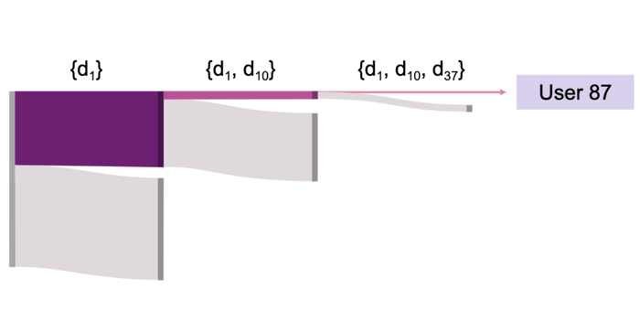
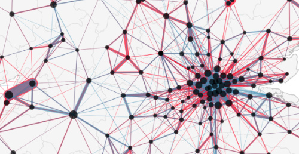
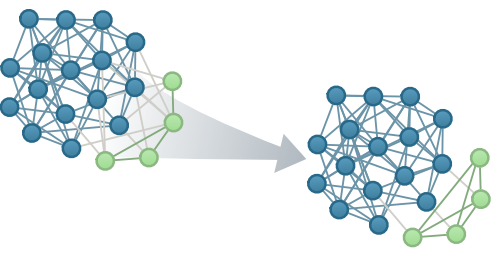
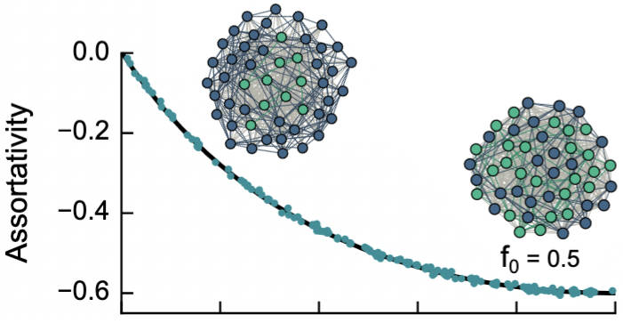
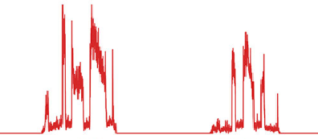
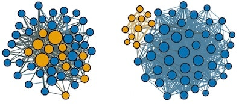
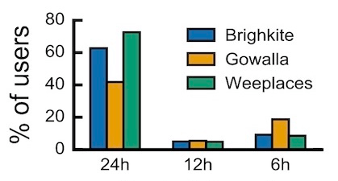
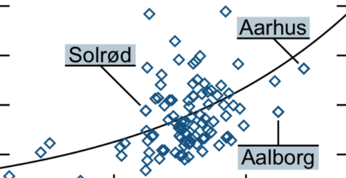
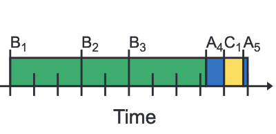
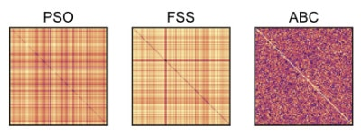
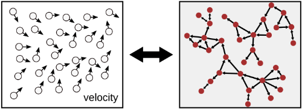
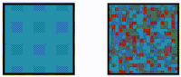
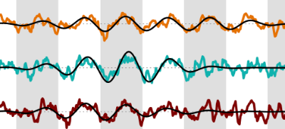
| 15 Oct 2025 | Our paper on behavioral online fingerprints is published in Nature Scientific Reports. |  |
| 27 May 2025 | We investigate how commuting patterns affect the scaling laws of crime in this recent preprint. |  |
| 03 Jan 2025 | In this fresh preprint, we explore the homophily trap concept in networks, where within-group interaction can sometimes disadvantage minorities. |  |
| 11 Jul 2024 | I'm thrilled to join the PLOS Complex Systems Editorial Board. If you work with complex adaptive systems, consider sharing your work with us. | |
| 04 Mar 2024 | Join us for a fully-funded PhD in Computer Science at the University of Exeter on tackling societal challenges with computational social science. | |
| 20 Dec 2023 | We explore online fingerprints and reveal how web domains can uniquely identify individuals in this fresh preprint. | |
| 29 Nov 2023 | Our paper on the inadequacies of nominal assortativity is published in Nature Scientific Reports. See the press release. |  |
| 07 Jun 2023 | Our recently published paper presents four data sets combining the SocioPatterns platform with surveys to understand conferences. |  |
| 07 Dec 2022 | We discuss how computational models help understanding inequality in social phenomena in this SIAM News piece. | |
| 18 Nov 2022 | In this preprint, we expose the inadequacies of nominal assortativity for assessing homophily in networks. | |
| 27 Jun 2022 | Our work on inequality in face-to-face gatherings is published in Nature Communications Physics. |  |
| 04 Jan 2022 | Fresh on arxiv: we uncover states of predictability in human mobility. |  |
| 01 Dec 2021 | Paper on the inadequacy of using crime rates per capita to rank cities was just published in the Crime Science journal. |  |
| 19 Jul 2021 | We are organizing the Exeter School on Urban Analytics as the second week of the Sustainability Summer Programme at the University of Exeter. | |
| 22 Jun 2021 | We examine how homophily drives inequality in face-to-face gatherings in this new preprint. | |
| 30 Dec 2020 | Check out a fresh new preprint on the scaling laws of crime and the inadequacy of using crime rates per capita to rank cities. | |
| 29 Dec 2020 | We investigate how people navigate on the Web and characterize our tendency to follow online routines (paper accepted in ICWSM 2021). |  |
| 25 May 2020 | Our paper on networks and swarm intelligence is online in Applied Network Science. |  |
| 10 Jun 2019 | Submit your work to Structure and Dynamics of Crime, a special issue in the Applied Network Science journal. | |
| 18 Jan 2019 | We are organizing the fourth NetCrime (Symposium on the Structure and Mobility of Crime) at NetSci 2019. | |
| 10 Jan 2019 | Our preprint with an overview of spatial concentration and temporal regularities in crime is out on arXiv. | |
| 09 Nov 2018 | Check out our new preprint on computational swarm intelligence and network science. |  |
| 27 Sep 2018 | Read our post on the SpringerBlog about listening to the changes in the urban rhythms. |  |
| 26 Sep 2018 | Our latest work on temporal regularities in crime is online in EPJ Data Science. |  |
| 07 Apr 2018 | I gave a short tutorial at Complexity72h on performing embarrassingly parallel data analysis with IPython. |